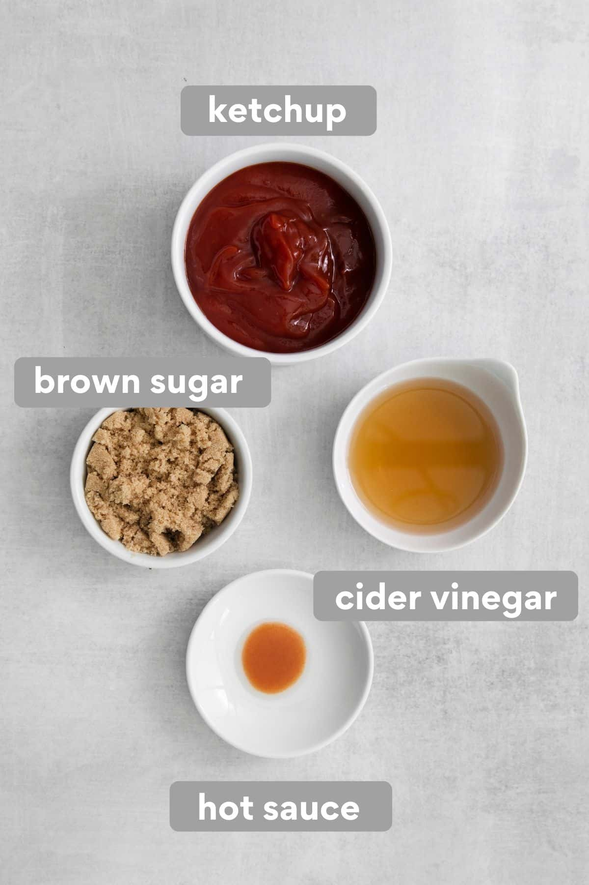
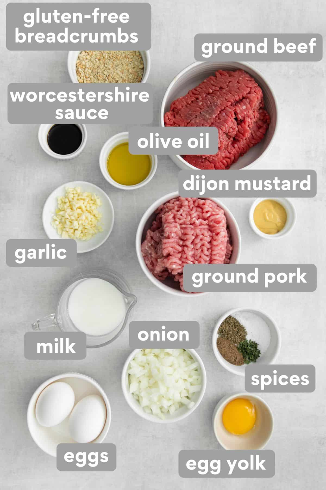
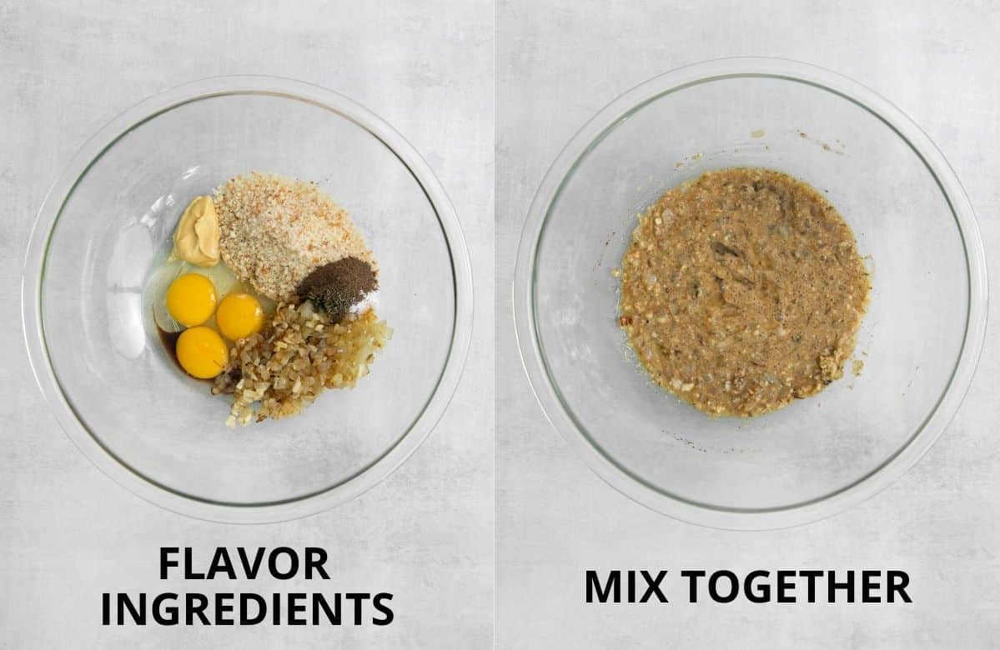
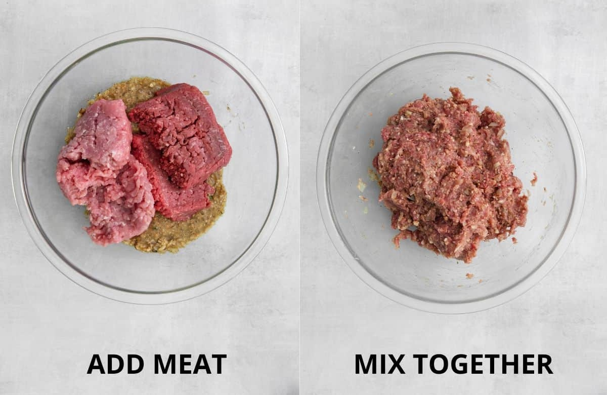
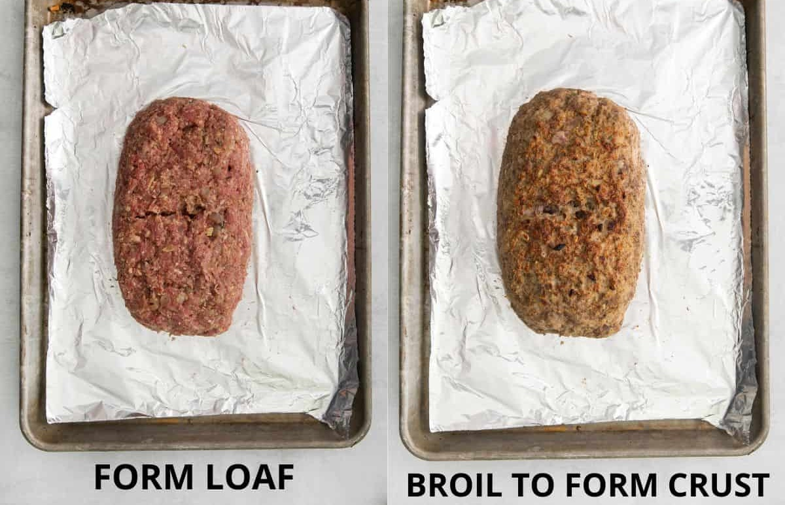
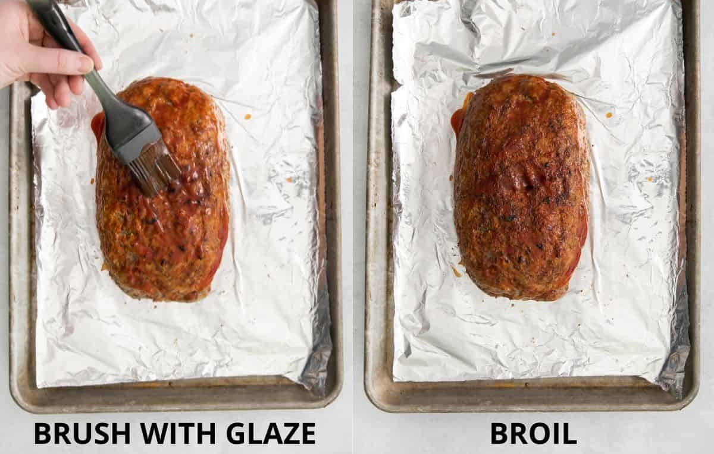
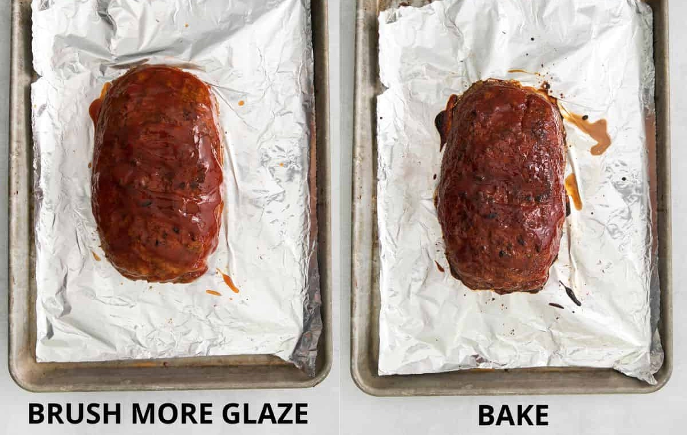

This amazing, homemade gluten-free meatloaf is full of flavor with a tangy, sweet, and savory glaze that will have feel warm, cozy, and satisfied!
Ingredients for the Glaze

Ketchup
Ketchup provides the perfect sweet, tomato-y base for this glaze.
Brown Sugar
I love sweetening up this glaze with brown sugar. It makes this gluten-free meatloaf irresistible!
Apple Cider Vinegar
Apple cider vinegar adds a nice tangy acidity to this glaze.
Hot Sauce
A touch of hot sauce adds flavor that people won't be able to put their finger on. It's won't be too spicy!
Ingredients for the Meatloaf

Gluten-free bread crumbs: You can use regular or panko gluten-free breadcrumbs for this gluten-free meatloaf.
Or make your own gluten-free breadcrumbs!
Ground beef and ground pork: You can use all beef, but I love the combination of beef and pork best!
The combinations of ground meat are a not-so secret ingredient that makes this stand out from a traditional meatloaf recipe.
Worcestershire sauce: Worcestershire sauce adds great flavor to the meat mixture.
But it isn't always gluten-free, so be sure to check the label!
Dijon mustard: Adds some depth of flavor to the meatloaf.
Milk: Milk makes this gluten-free meatloaf moist and delicious!
Eggs: Eggs are an important binder, holding the whole mixture together.
Egg yolk: An extra egg yolk adds richness, helps hole the mixture together, and creates a more moist meatloaf.
Here are the easy steps to making this gluten-free meatloaf:
Glaze
In a small saucepan, mix together the ingredients for the glaze. Bring to a simmer over medium heat and cook,
stirring often, for 5 minutes until slightly thickened. Measure out ½ cup of the glaze to top the gluten-free meatloaf while it cooks,
and set aside the rest to serve with the meatloaf.
In a medium saucepan over medium-high heat, add the olive oil and onion. Cook for 5-7 minutes until completely softened.
Add the garlic and cook for another 30 seconds. Let cool slightly.
Meatloaf
Grease a sheet pan with cooking spray. Set aside.

In a large bowl, combine the onion mixture, gluten-free bread crumbs, milk, eggs + yolk,
Dijon mustard, Worcestershire sauce, salt, pepper, thyme and parsley.
Mix to combine.

Add the ground beef and ground pork.
Knead together with your hands until totally combined.

Shape the meat mixture into a long, flat rectangle (about 9×5) on the prepared sheet
pan. —You'll broil the meatloaf before you bake it. This will help form a nice crust for the glaze to cling to!
Broil the gluten-free meatloaf on the upper rack of the oven until well browned, about 5 minutes.

Brush ¼ cup of the ketchup glaze over top and sides of loaf and return to the oven, then broil until the glaze begins to brown, about 2 minutes.

Brush the gluten-free meatloaf with another ¼ cup of glaze. Set the oven temperature to 350F. Bake the meatloaf for 40-45 minutes,
or until the internal temperature reaches 160F.
Transfer the meatloaf to a serving platter and tent with foil. Let sit for 20 minutes before slicing.
Slice and serve the gluten-free meatloaf with the reserved glaze. Enjoy!